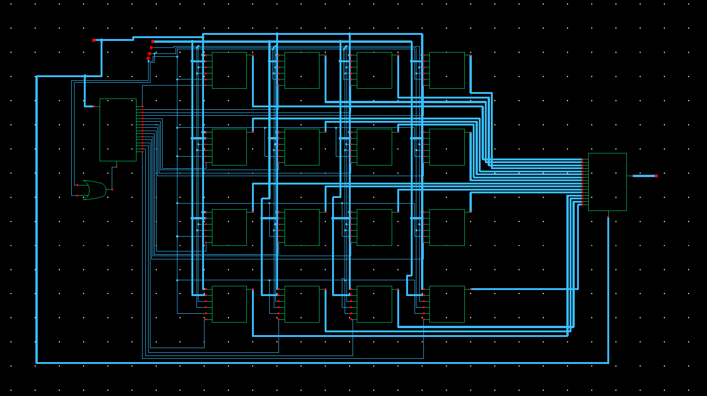

Hardware
Low-Power 1Mb SRAM Design – Cadence
Designed and verified a 1 Mb low-power SRAM in FreePDK 45nm technology using a hierarchical 16-bank architecture with 6T bitcells, row/column decoding, sense amplifiers, write drivers, pass-gate output multiplexing, and an output latch. Implemented selective enabling to reduce unnecessary switching activity and added MTCMOS leakage reduction for inactive decoder logic. Verified read/write functionality through transistor-level simulations, RC-pi simulation models, and PVT corner testing.
View Report